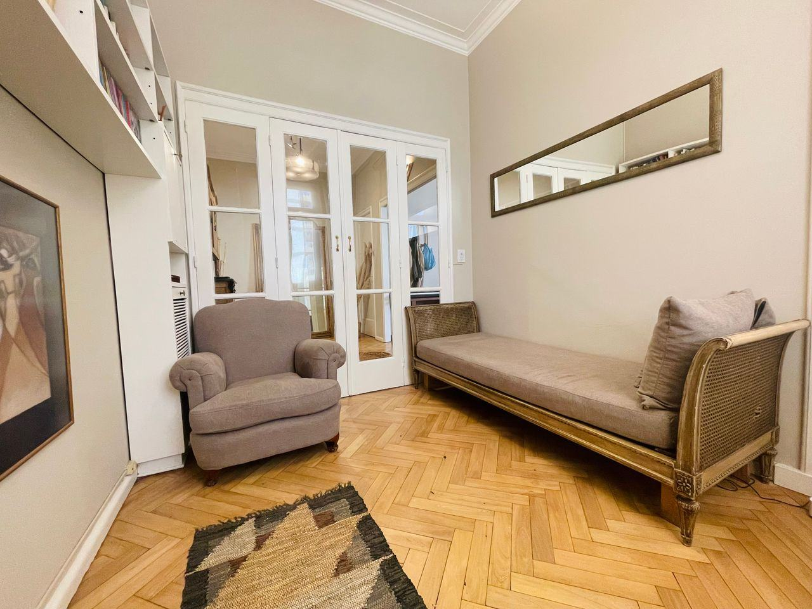
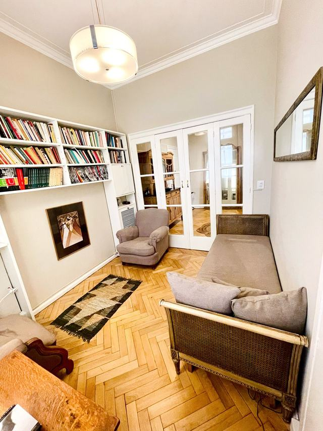
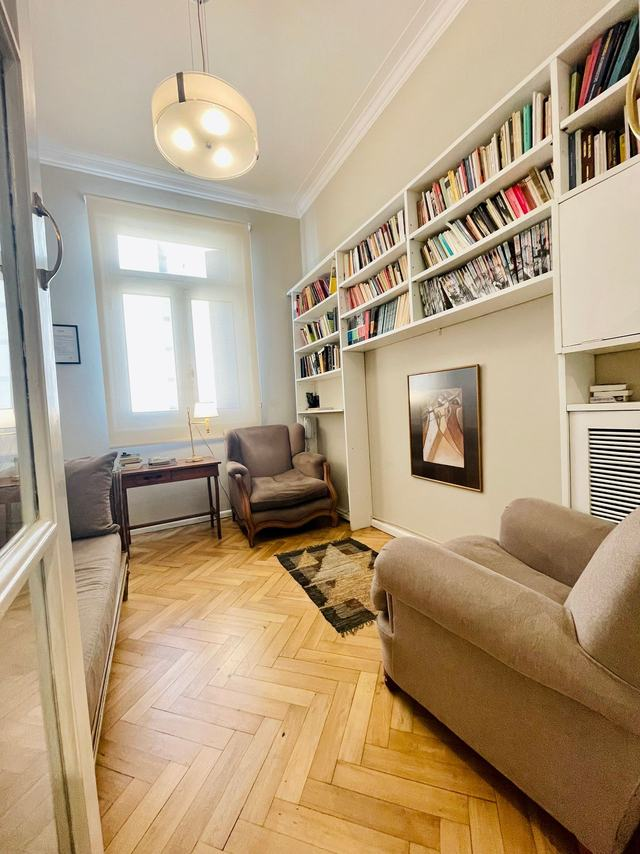
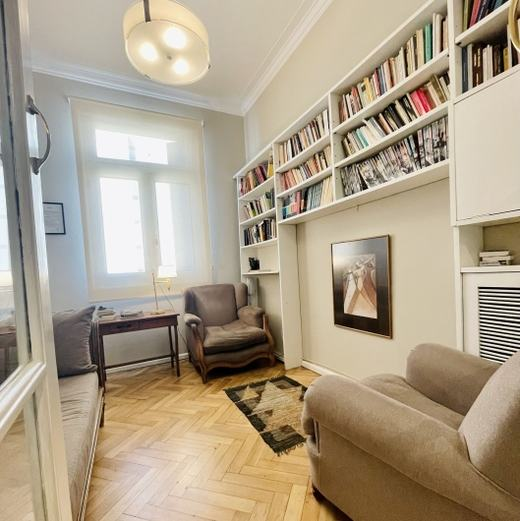

Psicoanálisis para adultos, en Rosario y online
Consultorio privado de psicoanálisis. Atención de adultos, presencial en Rosario y online en toda Argentina, con frecuencia semanal o quincenal. Un espacio de escucha rigurosa para ubicar las causas del sufrimiento y trabajar sobre ellas.

El consultorio: biblioteca, sillón y diván. Buenos Aires 1110, Piso 4, Dto. 8, Rosario.
Unas pocas palabras sobre el método analítico
El psicoanálisis no impone consejos ni recetas. Ofrece un tiempo y un espacio donde desplegar el padecimiento propio y encontrar las determinaciones que sostienen las inhibiciones, las angustias y las elecciones de cada quien.
Cómo trabaja el consultorio
«Consultorio privado de psicoanálisis. Atención de adultos, presencial en Rosario y online en toda Argentina.»
Descripción del propio profesional, publicada en su perfil de Doctoralia.
La práctica está orientada por la formación psicoanalítica de orientación freudiana y lacaniana: la Escuela de la Orientación Lacaniana (EOL), la Escuela de Psicoanálisis Sigmund Freud (EPSF) de Rosario, los posgrados de ALEF y los seminarios de la Maestría en Psicoanálisis de la Universidad Nacional de Rosario. Todo eso está detallado más abajo, en la sección de formación.
Contacto: la coordinación de turnos es por mensaje de texto o audio de WhatsApp al +54 341 301-2482, indicando disponibilidad horaria y modalidad de preferencia.
Escucha singular
Sin juicios morales ni recetas universales: el trabajo se funda en la historia y la palabra de cada persona.
Presencial y online
Consultorio en el centro de Rosario, o videollamada para pacientes del resto del país y del exterior.
Encuadre y resguardo
Práctica matriculada bajo la Ley Provincial 9.847 y la Ley Nacional de Salud Mental 26.657. Confidencialidad en el marco del secreto profesional.
Dónde se atiende
Buenos Aires 1110, Piso 4, Departamento 8 — Rosario, Santa Fe (S2000). Zona céntrica, a pocos minutos del microcentro. Edificio con ascensor y acceso con turno previamente acordado.



Fotos del consultorio publicadas por el profesional en su perfil de Doctoralia.
Habilitación profesional del consultorio
La habilitación del consultorio no es una promesa: es una resolución del Colegio de Psicólogas y Psicólogos de la Provincia de Santa Fe. Estos son los datos que figuran en el certificado.
- Habilitación
- N° 084-60296
- Norma
- Ley 9.847 — modificatoria Ley 10.169
- Titular
- Lisandro Lagos (Mat. 5677)
- Resolución
- ACTA N° 958 — Trámite 58-0111-22
- Domicilio habilitado
- Buenos Aires 1110, Piso 4, Dto. 8 — Rosario
- Vigencia
- Hasta el 16 de agosto de 2027
Datos transcriptos del certificado exhibido en el consultorio, publicado por el profesional en su sitio actual.
Formación, práctica e instituciones
La formación del psicoanálisis se sostiene en tres patas: análisis personal, supervisión clínica y estudio sostenido de los textos. Esta es la trayectoria, tal como figura en el sitio actual y en el perfil público de Doctoralia.
- 2007 Práctica profesional en Salud Mental Servicio de Salud Mental del Nuevo Hospital San Antonio de Padua, Río Cuarto (Córdoba).
- 2007 · 2008 Congresos nacionales XII Congreso Argentino de Psicología (San Luis, 2007) y VII Congreso Argentino de Psicoanálisis (Córdoba, 2008).
- 2009 Licenciado en Psicología Universidad Empresarial Siglo 21 (Córdoba).
- 2009 Seminarios de la Maestría en Psicoanálisis (UNR) La investigación en psicoanálisis (Dra. Pura Cancina, 30 hs) · Interlocutores filosóficos de Lacan (Lic. Nora Trosman, 30 hs) · Vicisitudes del acto (Lic. Juan B. Ritvo, 30 hs) · Taller de investigación y escritura (Dr. Alberto Giordano, 30 hs).
- 2010 Posgrados en ALEF Práctica clínica en psicoanálisis (240 hs cátedra) e Intervenciones del analista — Dirección de la cura (28 hs cátedra), Asociación Latinoamericana de Estudios Freudianos.
- 2010 – actualidad Consultorio privado Atención de adolescentes y adultos en Rosario, presencial y online.
- 2011 Curso de clínica psicoanalítica Estudios Avanzados CP-EA, Escuela de la Orientación Lacaniana (EOL).
- 2011 Amor y transferencia en Platón, Freud y Lacan Lic. Margarita Scotta — Universidad Abierta Interamericana (UAI, Rosario), 42 hs cátedra.
- 2012 Las formaciones del inconsciente Escuela de Psicoanálisis Sigmund Freud (EPSF), Rosario, 42 hs cátedra.
- 2012 Clínica psicológica institucional PsicoRed, centro de asistencia psicológica y psiquiátrica, Rosario.
Qué cuesta, sin sorpresas
Valores publicados por el propio profesional. La frecuencia habitual —semanal o quincenal— se acuerda en las entrevistas iniciales.
Psicoanálisis presencial
$60.000
por sesión- Consultorio en Buenos Aires 1110
- Frecuencia semanal o quincenal
- Atención particular
Consulta online
$60.000
por sesión- Para todo el país y el exterior
- Videollamada en horario acordado
- Mismo encuadre que la presencial
Primera sesión de psicología
$60.000
entrevista inicial- Planteo del motivo de consulta
- Acuerdo de horarios y frecuencia
- Presencial u online
Forma de pago y documentación: la atención es particular. Si necesitás documentación para presentar ante tu cobertura médica, escribí por WhatsApp y se te indica qué se entrega.
Lo que dicen quienes consultaron
Las cinco opiniones publicadas en el perfil público de Doctoralia, todas con cinco estrellas. Se reproducen textualmente y sin datos que permitan identificar a nadie.
«Excelente profesional. Me ayudó muchísimo, totalmente agradecida.»
«Supo escucharme para ubicar las causas de mi sufrimiento. Esto me permitió generar vínculos satisfactorios con los demás. En especial con mi pareja.»
«Seriedad y calidez. Me acompañó en un intenso proceso gracias al cual se alivió mucho sufrimiento y pude encarar proyectos que los tenía postergados. Gracias.»
«Me ayudó a resolver el sufrimiento que acarreaba hacia ya varios años. Gracias.»
Ver las 5 opiniones en Doctoralia
Los testimonios se reproducen respetando el secreto profesional: sin nombres, sin fechas y sin detalles que permitan identificar a la persona.
Antes de escribir
¿Cómo se coordina la primera entrevista?
Escribiendo un mensaje —texto o audio— por WhatsApp al +54 341 301-2482, indicando disponibilidad horaria y si preferís presencial u online. Se acuerda día y horario para la primera entrevista.
¿Con qué frecuencia son las sesiones?
La frecuencia habitual es semanal o quincenal. Se acuerda en las entrevistas iniciales según el motivo de consulta y la disponibilidad de cada persona.
¿Atiende de forma online?
Sí. Se atiende online por videollamada, para residentes en cualquier punto de Argentina y para hispanohablantes en el exterior. Hace falta un espacio privado y una conexión estable.
¿Atiende obras sociales o prepagas?
La atención es particular. Si necesitás documentación para presentar ante tu cobertura, escribí por WhatsApp y se te indica qué se entrega.
¿Dónde queda el consultorio?
Buenos Aires 1110, Piso 4, Departamento 8, Rosario (S2000). El consultorio está habilitado por el Colegio de Psicólogas y Psicólogos de Santa Fe con el N° 084-60296, con vigencia hasta el 16 de agosto de 2027. Ver en el mapa.
¿Atiende adolescentes?
Sí: la atención es a adolescentes y adultos, de forma presencial en Rosario o por videollamada.
Coordinar una entrevista
El primer contacto es por mensaje de texto o audio de WhatsApp, indicando disponibilidad horaria y modalidad de preferencia. La respuesta se da dentro del día hábil.
-
WhatsApp
+54 341 301-2482 — mensaje de texto o audio -
Teléfono
+54 341 301-2482 -
Consultorio
Buenos Aires 1110, Piso 4, Dto. 8 — Rosario, Santa Fe -
Modalidad online
Videollamada para todo el país y el exterior